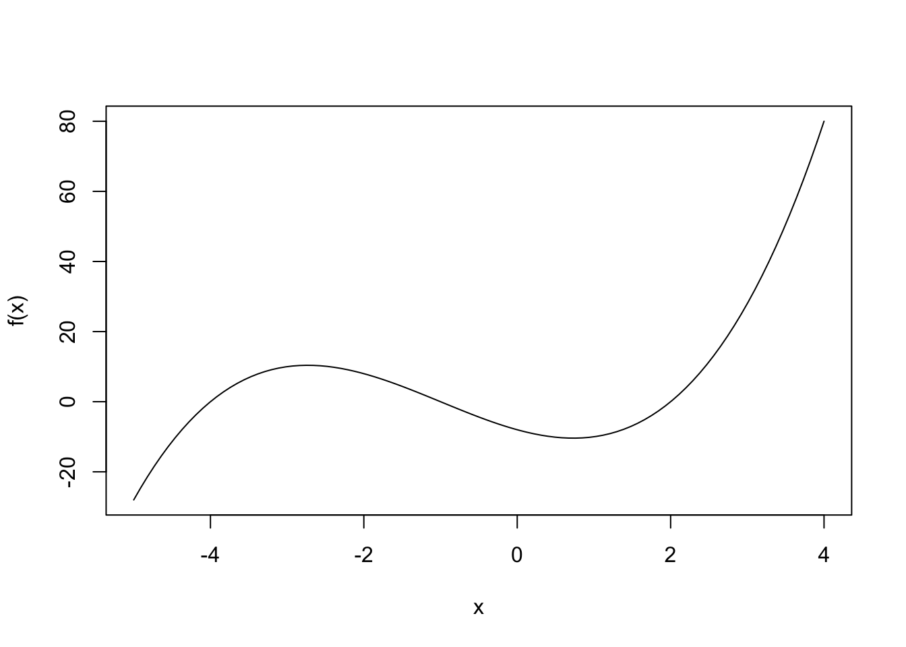
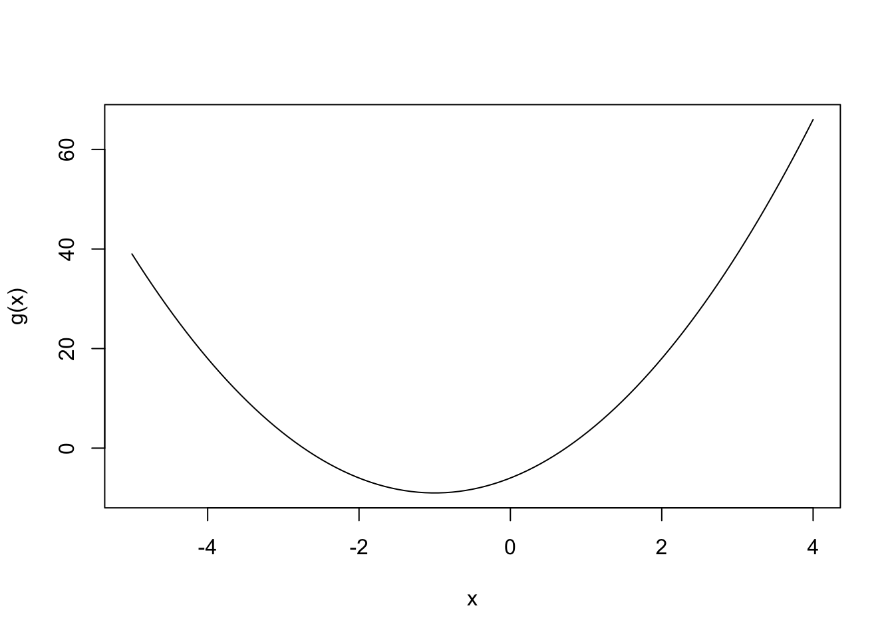
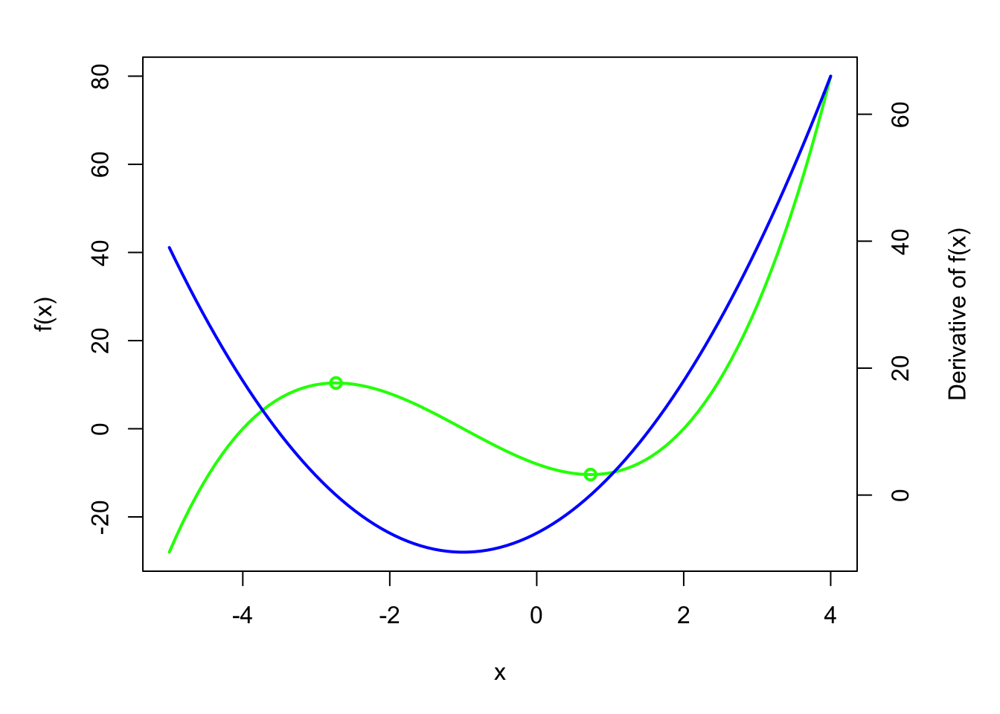
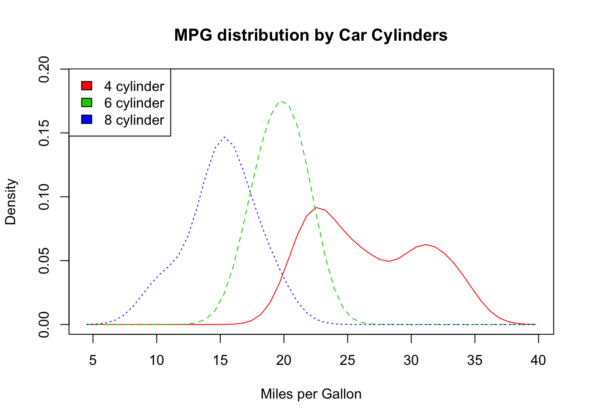

2.5 Lines: Helpers, Regression lines, Loess and Density Lines & Curves
2.5.1 Drawing curves from functions
Sometimes you don’t have data to plot but only a function, for instance a simple polynomial function.
\[f(x)=x^{3}+3x^{2}-6x-8\]
(Example lent from http://rpubs.com/wkmor1/simple-derivatives-in-r)
A simple plot of this function can be obtained using curve:

You are often interested in a derivative of a function. Here is one for f(x):
#Define a new function without body
g <- function(x) {}
#assign as body the derivative of f(x)
body(g) <- D(body(f), 'x')
#see what it looks like
curve(g, -5, 4)
So what does this derivative look like?
## 3 * x^2 + 3 * (2 * x) - 6Now wouldn’t it be nice to add a line of the derivative of this function in the same plot?
Easy peasy! The trick is using par(new=TRUE). While we’re at it, let’s add some key points to the ploit as well (requires library rootSolve - use install.packages("rootSolve"))
## [1] -2.7320508 0.7320508## [1] 10.3923 -10.3923#adjust Margins for secondary axis
par(mar = c(5,5,2,5))
curve(f, -5, 4, col="green", lwd=2)
points(f(roots$root) ~ roots$root, col="green", lwd=2)
par(new=TRUE)
curve(g, -5, 4, col="blue", xlab=NA, ylab=NA, axes=F, lwd=2)
axis(side=4)
mtext(side=4, line=3, "Derivative of f(x)")
## Package 'sm', version 2.2-5.4: type help(sm) for summary informationwith(mtcars, {
cyl.f <- factor(cyl, levels = c(4, 6, 8),
labels = c("4 cylinder", "6 cylinder", "8 cylinder"))
sm.density.compare(mpg, cyl, xlab = "Miles per Gallon")
title(main = "MPG distribution by Car Cylinders")
colfill <- c(2:(1+length(levels(cyl.f))))
legend("topleft", levels(cyl.f), fill = colfill)
})